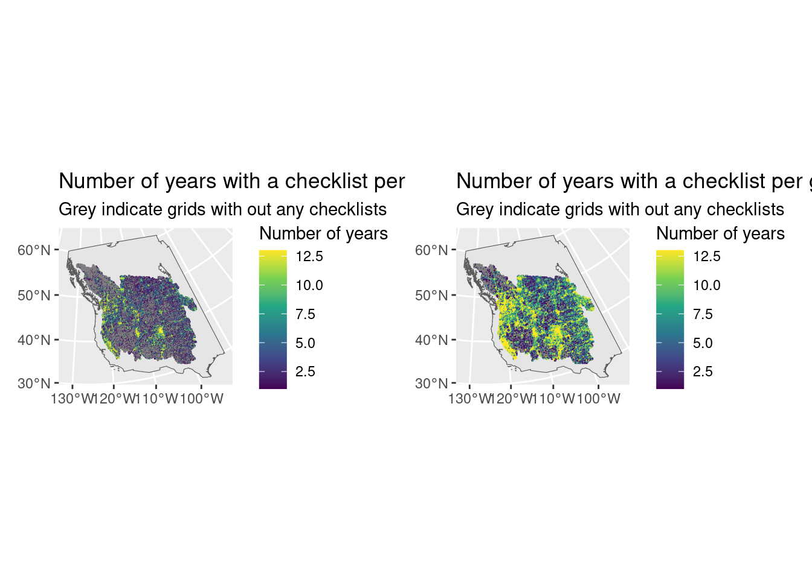
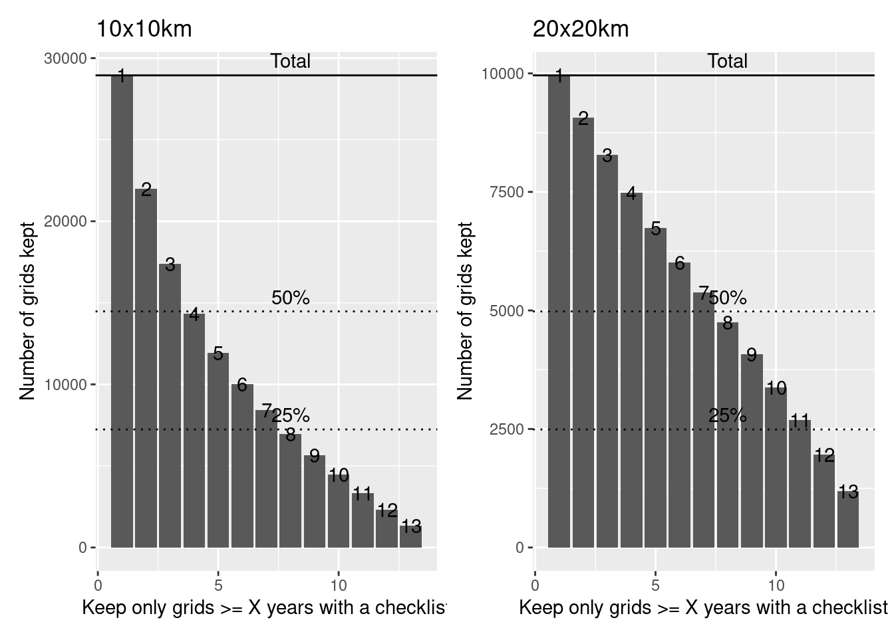
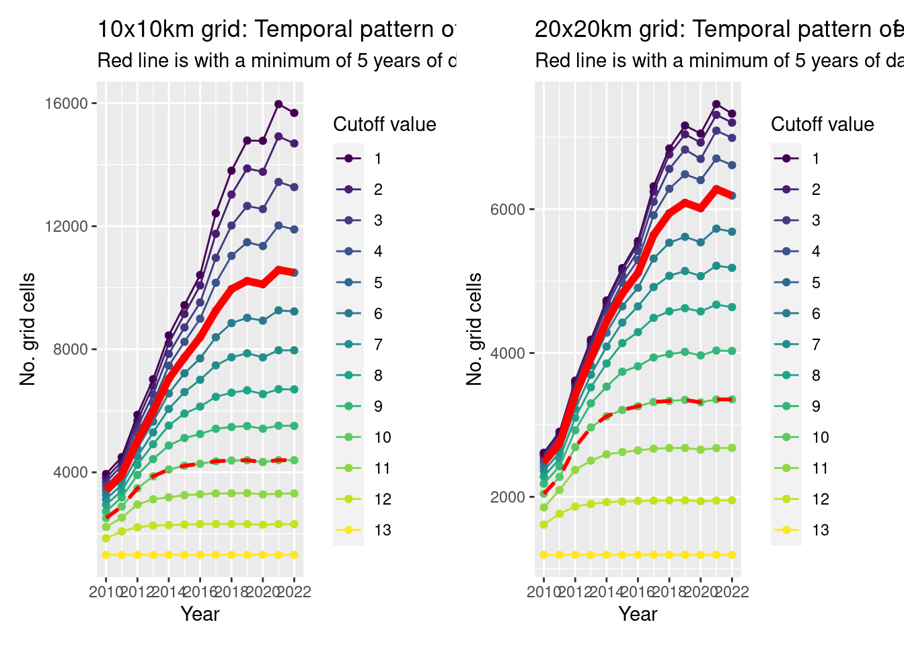

library(tidyverse)
library(sf)
library(patchwork)
grid_10 <- read_rds("Data/Datasets/grid_10km.rds")
grid_20 <- read_rds("Data/Datasets/grid_20km.rds")
obs_10 <- read_rds("Data/Datasets/lobcur_grid_10_coords.rds")
obs_20 <- read_rds("Data/Datasets/lobcur_grid_20_coords.rds")
base_map <- read_rds("Data/Datasets/base_map.rds")4 - Quality control
Here we want to do a bit of quality control and omit grid cells that are poorly sampled.
One easy way is to include only grid cells that have at least 1 checklist in at least X number of years. The problem is determining what that cutoff is. If we make it really strict (e.g., in every year, 13 years total), we’ll lose most of our data! If we make it really lax (e.g., in only one year), we risk including grids that may add a spatial bias to our analysis (if all newer grids are sampled to the East, for example).
Once we’ve decided on a cutoff, we want to make sure that there isn’t a really strong temporal pattern in the sampling of grids remaining.
To see an image more closely, right-click and select “Open Image in new Tab” (or similar)
Setup
First let’s summarize the data so we can see how many years of sampling we have for each grid.
samples_10 <- obs_10 |>
summarize(n_years = n_distinct(year, na.rm = TRUE), .by = "grid_id") |>
mutate(n_years = na_if(n_years, 0)) |>
inner_join(x = grid_10, y = _, by = "grid_id")
samples_20 <- obs_20 |>
summarize(n_years = n_distinct(year, na.rm = TRUE), .by = "grid_id") |>
mutate(n_years = na_if(n_years, 0)) |>
inner_join(x = grid_20, y = _, by = "grid_id")We’ll be doing some comparisons of how many grids we’ll have to drop, so let’s get the total number of grids that have at least 1 checklist as a comparison.
n_grid_10 <- sum(!is.na(samples_10$n_year))
n_grid_20 <- sum(!is.na(samples_20$n_year))Years of data
First let’s look spatially, at which grids have the most data. There is clearly a spatial pattern. In the 10x10km data you can almost see what look like routes through possibly more populated areas?
g1 <- ggplot() +
geom_sf(data = base_map) +
geom_sf(data = samples_10,
aes(fill = n_years, colour = n_years)) +
scale_colour_viridis_c(name = "Number of years", aesthetics = c("colour", "fill")) +
labs(title = "Number of years with a checklist per grid (10x10km)",
subtitle = "Grey indicate grids with out any checklists")
g2 <- ggplot() +
geom_sf(data = base_map) +
geom_sf(data = samples_20,
aes(fill = n_years, colour = n_years)) +
scale_colour_viridis_c(name = "Number of years", aesthetics = c("colour", "fill")) +
labs(title = "Number of years with a checklist per grid (20x20km)",
subtitle = "Grey indicate grids with out any checklists")
g1 + g2
Now let’s consider what we might lose if we were to use different cutoff values.
c10 <- st_drop_geometry(samples_10) |>
filter(!is.na(n_years)) |>
summarize(n_grids = n(), .by = "n_years") |>
arrange(desc(n_years)) |>
mutate(n_cum = cumsum(n_grids))
c20 <- st_drop_geometry(samples_20) |>
filter(!is.na(n_years)) |>
summarize(n_grids = n(), .by = "n_years") |>
arrange(desc(n_years)) |>
mutate(n_cum = cumsum(n_grids))
g1 <- ggplot(data = c10, aes(x = n_years, y = n_cum)) +
geom_bar(stat = "identity") +
geom_text(aes(label = n_years)) +
geom_hline(yintercept = c(n_grid_10, n_grid_10/2, n_grid_10/4), linetype = c("solid", "dotted", "dotted")) +
annotate(geom = "text", x = 8, y = c(n_grid_10, n_grid_10/2, n_grid_10/4),
label = c("Total", "50%", "25%"), vjust = -0.5) +
labs(title = "10x10km",
x = "Keep only grids >= X years with a checklist", y = "Number of grids kept")
g2 <- ggplot(data = c20, aes(x = n_years, y = n_cum)) +
geom_bar(stat = "identity") +
geom_text(aes(label = n_years)) +
geom_hline(yintercept = c(n_grid_20, n_grid_20/2, n_grid_20/4), linetype = c("solid", "dotted", "dotted")) +
annotate(geom = "text", x = 8, y = c(n_grid_20, n_grid_20/2, n_grid_20/4),
label = c("Total", "50%", "25%"), vjust = -0.5) +
labs(title = "20x20km",
x = "Keep only grids >= X years with a checklist", y = "Number of grids kept")
g1 + g2
These figures demonstrate how many data points (grid cells) we would be able to keep if we set our cutoff of the number of years to different values.
Note that the maximum number of grids kept is greater for the 10x10km grids because that is a smaller grid system and so has more grids to keep.
For example, for 10x10km grids, if we said that we would only keep grids that had at least one check list per year for 4 years (out of 13), we would keep about 50% of the grids.
On the other hand, for 20x20km grids, if we said that we would only keep grids that had at least one check list per year for 7 years (out of 13), we would keep more than 50% of the grids.
Let’s take a look at the temporal patterns (i.e. how many grids would we have over time if we picked different cutoffs).
Ideally we want the pattern to be fairly consistent (no strong jumps), but we know already that there will be definitely more grids sampled in more recent years. By picking a minimum number of years cutoff, we’re trying to reduce that pattern.
c10 <- obs_10 |>
filter(!is.na(year)) |>
mutate(n_years = n(), .by = "grid_id") |>
summarize(n = n_distinct(grid_id), .by = c("year", "n_years")) |>
arrange(year, desc(n_years)) |>
mutate(cum_n = cumsum(n), .by = c("year"))
c20 <- obs_20 |>
filter(!is.na(year)) |>
mutate(n_years = n(), .by = "grid_id") |>
summarize(n = n_distinct(grid_id), .by = c("year", "n_years")) |>
arrange(year, desc(n_years)) |>
mutate(cum_n = cumsum(n), .by = c("year"))
g1 <- ggplot(data = c10, aes(x = as.integer(year), y = cum_n, colour = factor(n_years), group = factor(n_years))) +
geom_point() +
geom_line() +
geom_line(data = filter(c10, n_years == 5), linewidth = 2, colour = "red") +
geom_line(data = filter(c10, n_years == 10), linetype = "dashed", linewidth = 1, colour = "red") +
scale_colour_viridis_d() +
scale_x_continuous(breaks = scales::breaks_pretty()) +
labs(x = "Year", y = "No. grid cells", colour = "Cutoff value",
title = "10x10km grid: Temporal pattern of samples given different min number of year cutoffs",
subtitle = "Red line is with a minimum of 5 years of data, dashed red is 10")
g2 <- ggplot(data = c20, aes(x = as.integer(year), y = cum_n, colour = factor(n_years), group = factor(n_years))) +
geom_point() +
geom_line() +
geom_line(data = filter(c20, n_years == 5), linewidth = 2, colour = "red") +
geom_line(data = filter(c20, n_years == 10), linetype = "dashed", linewidth = 1, colour = "red") +
scale_colour_viridis_d() +
scale_x_continuous(breaks = scales::breaks_pretty()) +
labs(x = "Year", y = "No. grid cells", colour = "Cutoff value",
title = "20x20km grid: Temporal pattern of samples given different min number of year cutoffs",
subtitle = "Red line is with a minimum of 5 years of data, dashed red is 10")
g1 + g2
So there is an increase in the number of grids per year, but that’s not unexpected.
If we try to flatten out that pattern, we’d use a 10 year cutoff (but that might be too stringent for the 10x10km data?)
Things to consider
- Do we want to cut off the data at 2012 (11yrs) or 2013 (10yrs)
- Maximize data quantity (>=5 years of data) or quality (>= 10years of data)?
I would consider a cutoff of
- 5yrs if using 10x10km
- 10yrs if using 20x20km